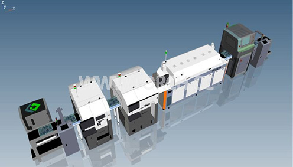

近日，“东南大学智慧城市研究院揭牌仪式暨首届新型智慧城市高峰论坛”在南京举行。东南大学校长张广军，云南省玉溪市市长张德华，江苏省科技厅副厅长蒋跃建，昆山杜克大学校长刘经南院士,武汉大学副校长李建成院士等出席揭牌仪式。
仪式上，东南大学副校长吴刚宣读了关于成立“东南大学智慧城市研究院”的批文，并宣布智慧城市研究院学术委员会组成名单。2016年8月1日，东南大学正式批准成立“东南大学智慧城市研究院”。吴刚副校长表示，组建东南大学智慧城市研究院是东南大学面对新的发展机遇、紧扣时代发展脉搏、依托学校教学科研资源，推进“双一流”建设以及服务政府和社会的重要举措。
众所周知，随着我国经济发展水平的不断提升，城市化已成为今后相当长一段时间的大势所趋。据统计，2016年，我国已有57.35%的居民长年居住在城市，与此同时，许多城市出现了交通拥挤、住房困难、环境恶化、资源紧张等所谓“城市病”。建造智慧城市，是解决城市病的有效途径。2017年5月26日，东南大学智慧城市研究院揭牌仪式暨首届新型智慧城市高峰论坛在南京举行。据该院常务副院长王庆教授介绍，新成立的智慧城市研究院，将开展智慧城市的相关理论与应用技术研究，探索新形势下新型科研机构的建设模式，按照研究院的发展规划，到2020年，将建成复杂超网络与信息工程研究中心、智慧城市大数据研究中心、智能交通研究中心、基础设施智能监测研究等10个有重要学术影响力的研究中心。
上一篇：因涉嫌垄断 欧盟处罚谷歌24.2亿欧元 下一篇：走在传感技术研究前沿